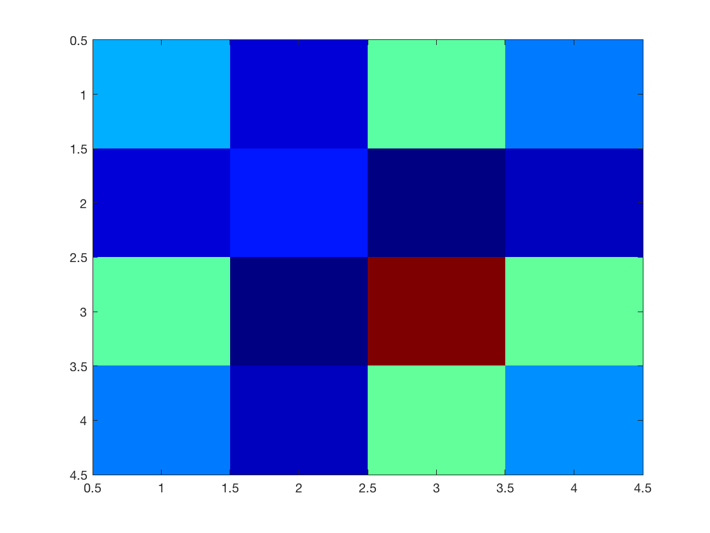
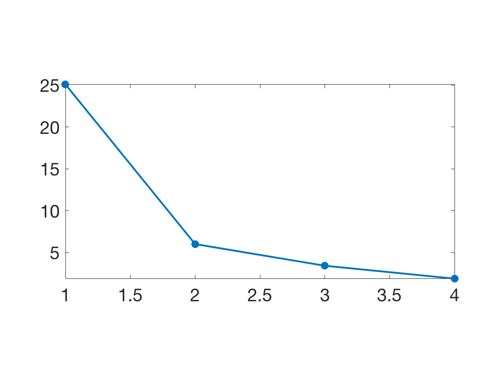
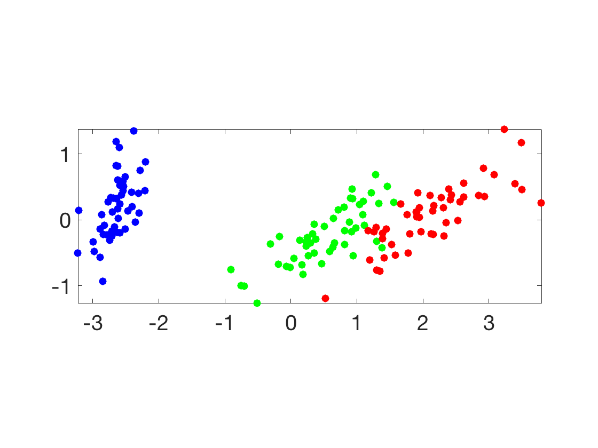
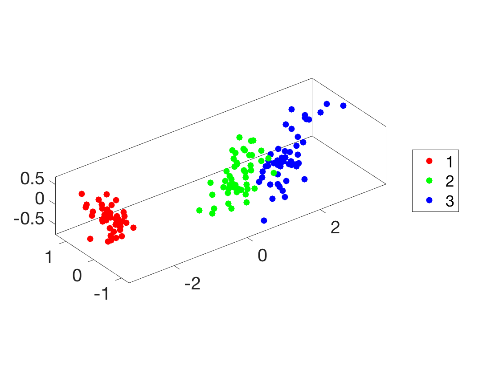
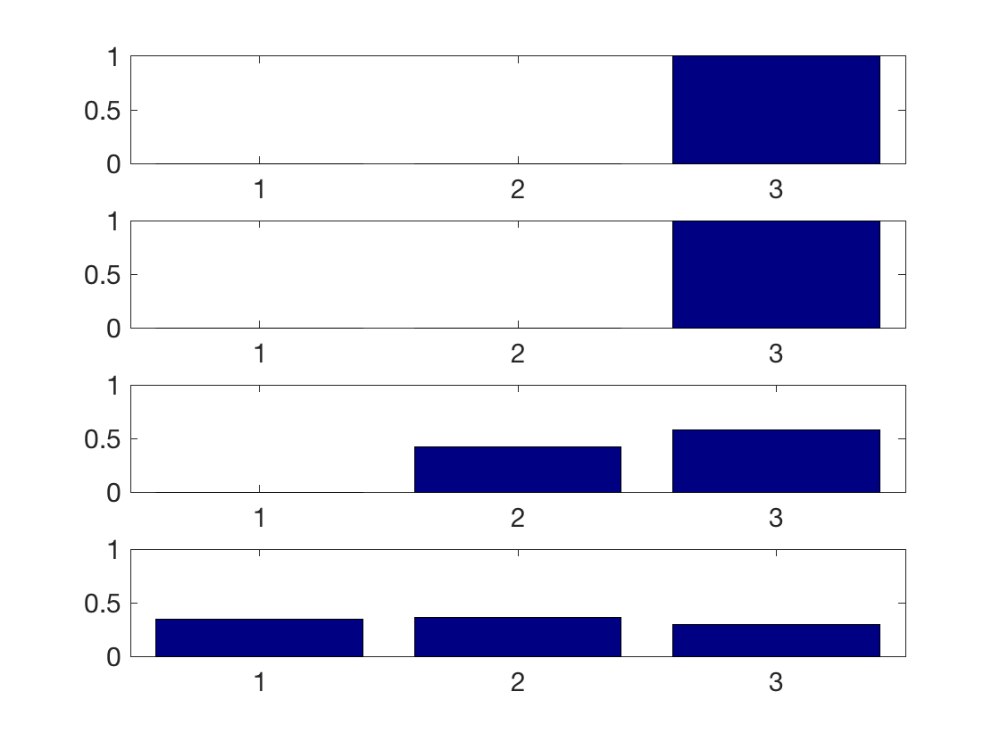
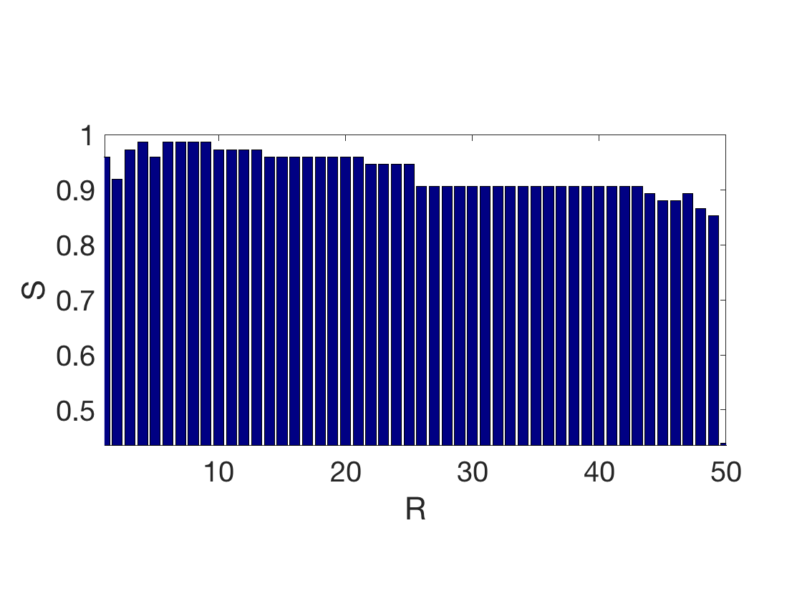
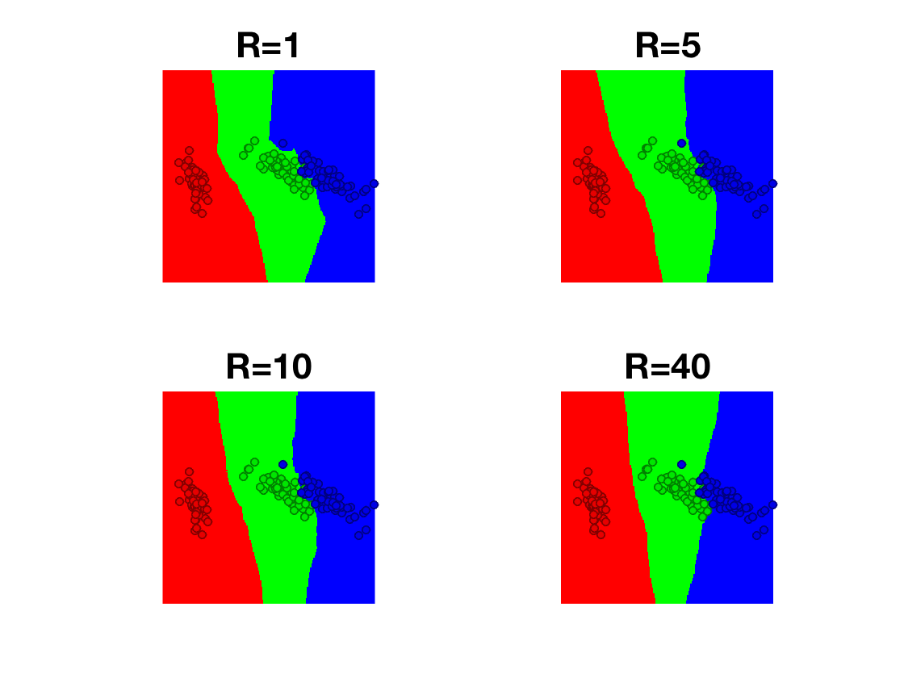

\[
\newcommand{\NN}{\mathbb{N}}
\newcommand{\CC}{\mathbb{C}}
\newcommand{\GG}{\mathbb{G}}
\newcommand{\LL}{\mathbb{L}}
\newcommand{\PP}{\mathbb{P}}
\newcommand{\QQ}{\mathbb{Q}}
\newcommand{\RR}{\mathbb{R}}
\newcommand{\VV}{\mathbb{V}}
\newcommand{\ZZ}{\mathbb{Z}}
\newcommand{\FF}{\mathbb{F}}
\newcommand{\KK}{\mathbb{K}}
\newcommand{\UU}{\mathbb{U}}
\newcommand{\EE}{\mathbb{E}}
\newcommand{\Aa}{\mathcal{A}}
\newcommand{\Bb}{\mathcal{B}}
\newcommand{\Cc}{\mathcal{C}}
\newcommand{\Dd}{\mathcal{D}}
\newcommand{\Ee}{\mathcal{E}}
\newcommand{\Ff}{\mathcal{F}}
\newcommand{\Gg}{\mathcal{G}}
\newcommand{\Hh}{\mathcal{H}}
\newcommand{\Ii}{\mathcal{I}}
\newcommand{\Jj}{\mathcal{J}}
\newcommand{\Kk}{\mathcal{K}}
\newcommand{\Ll}{\mathcal{L}}
\newcommand{\Mm}{\mathcal{M}}
\newcommand{\Nn}{\mathcal{N}}
\newcommand{\Oo}{\mathcal{O}}
\newcommand{\Pp}{\mathcal{P}}
\newcommand{\Qq}{\mathcal{Q}}
\newcommand{\Rr}{\mathcal{R}}
\newcommand{\Ss}{\mathcal{S}}
\newcommand{\Tt}{\mathcal{T}}
\newcommand{\Uu}{\mathcal{U}}
\newcommand{\Vv}{\mathcal{V}}
\newcommand{\Ww}{\mathcal{W}}
\newcommand{\Xx}{\mathcal{X}}
\newcommand{\Yy}{\mathcal{Y}}
\newcommand{\Zz}{\mathcal{Z}}
\newcommand{\al}{\alpha}
\newcommand{\la}{\lambda}
\newcommand{\ga}{\gamma}
\newcommand{\Ga}{\Gamma}
\newcommand{\La}{\Lambda}
\newcommand{\Si}{\Sigma}
\newcommand{\si}{\sigma}
\newcommand{\be}{\beta}
\newcommand{\de}{\delta}
\newcommand{\De}{\Delta}
\renewcommand{\phi}{\varphi}
\renewcommand{\th}{\theta}
\newcommand{\om}{\omega}
\newcommand{\Om}{\Omega}
\renewcommand{\epsilon}{\varepsilon}
\newcommand{\Calpha}{\mathrm{C}^\al}
\newcommand{\Cbeta}{\mathrm{C}^\be}
\newcommand{\Cal}{\text{C}^\al}
\newcommand{\Cdeux}{\text{C}^{2}}
\newcommand{\Cun}{\text{C}^{1}}
\newcommand{\Calt}[1]{\text{C}^{#1}}
\newcommand{\lun}{\ell^1}
\newcommand{\ldeux}{\ell^2}
\newcommand{\linf}{\ell^\infty}
\newcommand{\ldeuxj}{{\ldeux_j}}
\newcommand{\Lun}{\text{\upshape L}^1}
\newcommand{\Ldeux}{\text{\upshape L}^2}
\newcommand{\Lp}{\text{\upshape L}^p}
\newcommand{\Lq}{\text{\upshape L}^q}
\newcommand{\Linf}{\text{\upshape L}^\infty}
\newcommand{\lzero}{\ell^0}
\newcommand{\lp}{\ell^p}
\renewcommand{\d}{\ins{d}}
\newcommand{\Grad}{\text{Grad}}
\newcommand{\grad}{\text{grad}}
\renewcommand{\div}{\text{div}}
\newcommand{\diag}{\text{diag}}
\newcommand{\pd}[2]{ \frac{ \partial #1}{\partial #2} }
\newcommand{\pdd}[2]{ \frac{ \partial^2 #1}{\partial #2^2} }
\newcommand{\dotp}[2]{\langle #1,\,#2\rangle}
\newcommand{\norm}[1]{|\!| #1 |\!|}
\newcommand{\normi}[1]{\norm{#1}_{\infty}}
\newcommand{\normu}[1]{\norm{#1}_{1}}
\newcommand{\normz}[1]{\norm{#1}_{0}}
\newcommand{\abs}[1]{\vert #1 \vert}
\newcommand{\argmin}{\text{argmin}}
\newcommand{\argmax}{\text{argmax}}
\newcommand{\uargmin}[1]{\underset{#1}{\argmin}\;}
\newcommand{\uargmax}[1]{\underset{#1}{\argmax}\;}
\newcommand{\umin}[1]{\underset{#1}{\min}\;}
\newcommand{\umax}[1]{\underset{#1}{\max}\;}
\newcommand{\pa}[1]{\left( #1 \right)}
\newcommand{\choice}[1]{ \left\{ \begin{array}{l} #1 \end{array} \right. }
\newcommand{\enscond}[2]{ \left\{ #1 \;:\; #2 \right\} }
\newcommand{\qandq}{ \quad \text{and} \quad }
\newcommand{\qqandqq}{ \qquad \text{and} \qquad }
\newcommand{\qifq}{ \quad \text{if} \quad }
\newcommand{\qqifqq}{ \qquad \text{if} \qquad }
\newcommand{\qwhereq}{ \quad \text{where} \quad }
\newcommand{\qqwhereqq}{ \qquad \text{where} \qquad }
\newcommand{\qwithq}{ \quad \text{with} \quad }
\newcommand{\qqwithqq}{ \qquad \text{with} \qquad }
\newcommand{\qforq}{ \quad \text{for} \quad }
\newcommand{\qqforqq}{ \qquad \text{for} \qquad }
\newcommand{\qqsinceqq}{ \qquad \text{since} \qquad }
\newcommand{\qsinceq}{ \quad \text{since} \quad }
\newcommand{\qarrq}{\quad\Longrightarrow\quad}
\newcommand{\qqarrqq}{\quad\Longrightarrow\quad}
\newcommand{\qiffq}{\quad\Longleftrightarrow\quad}
\newcommand{\qqiffqq}{\qquad\Longleftrightarrow\qquad}
\newcommand{\qsubjq}{ \quad \text{subject to} \quad }
\newcommand{\qqsubjqq}{ \qquad \text{subject to} \qquad }
\newcommand{\eqdef}{\equiv}
\]
PCA, Nearest-Neighbors and Clustering
Test for PCA (visualization), NN classification and K-means on the IRIS dataset.
Contents
Installing toolboxes and setting up the path.
You need to download the following files: general toolbox.
You need to unzip these toolboxes in your working directory, so that you have toolbox_general in your directory.
For Scilab user: you must replace the Matlab comment '%' by its Scilab counterpart '//'.
Recommandation: You should create a text file named for instance numericaltour.sce (in Scilab) or numericaltour.m (in Matlab) to write all the Scilab/Matlab command you want to execute. Then, simply run exec('numericaltour.sce'); (in Scilab) or numericaltour; (in Matlab) to run the commands.
Execute this line only if you are using Matlab.
getd = @(p)path(p,path);
Then you can add the toolboxes to the path.
getd('toolbox_general/');
Dataset Loading
Helpers.
SetAR = @(ar)set(gca, 'PlotBoxAspectRatio', [1 ar 1], 'FontSize', 20);
Load the dataset.
name = 'iris';
load(['ml-' name]);
Randomly permute it.
A = A(randperm(size(A,1)),:);
Separate the features from the class information. Be sure to start the class at index 1.
X = A(:,1:end-1);
y = A(:,end);
y = y-min(y)+1;
\(p\) is the number of samples, \(n\) is the dimensionality of the features, \(k\) is the number of classes.
[p,n] = size(X);
k = max(y);
Dimenionality Reduction and PCA
In order to display in 2D or 3D the data, dimensionality is needed. The simplest method is the principal component analysis,
which perform an orthogonal linear projection on the principal axsis (eigenvector) of the covariance matrix.
Compute empirical mean \(m \in \RR^n\) and covariance \(C \in \RR^{n \times n}\).
m = mean(X,1);
Xm = X-repmat(m, [p 1]);
C = Xm'*Xm;
Display the covariance matrix.
clf;
imagesc(C);

Compute PCA ortho-basis.
[U,D] = eig(C);
[d,I] = sort(diag(D), 'descend');
U = U(:,I);
Compute the feature in the PCA basis.
z = (U'*Xm')';
Plot sqrt of the eigenvalues.
clf;
plot(sqrt(d), '.-', 'LineWidth', 2, 'MarkerSize', 30);
axis tight;
SetAR(1/2);

Display in 2D.
col = {'b' 'g' 'r' 'c' 'm' 'y' 'k'};
ms = 25;
clf; hold on;
for i=1:k
I = find(y==i);
plot(z(I,1), z(I,2), '.', 'Color', col{i}, 'MarkerSize', ms);
end
axis tight; axis equal; box on;
SetAR(1);

Display in 2D.
clf; hold on;
for i=1:k
I = find(y==i);
plot3(z(I,1), z(I,2), z(I,3), '.', 'Color', col{i}, 'MarkerSize', ms);
end
view(3); axis tight; axis equal; box on;
SetAR(1);

Supervised Learning: Nearest Neighbor Classification
Split into training and testing.
p0 = round(.5*p);
p1 = p-p0;
X0 = X(1:p0,:); y0 = y(1:p0);
X1 = X(p0+1:end,:); y1 = y(p0+1:end);
Macro to compute pairwise squared Euclidean distance matrix.
distmat = @(X,Z)bsxfun(@plus,dot(X',X',1)',dot(Z',Z',1))-2*(X*Z');
Compute Euclidean distance between some \(x_{1,i}\) (for a fixed \(i\)) in the testing set and all other \(x_{1,j}\) in the
training set.
i = 1;
D = distmat(X0,X1(i,:));
Sort the distance and generate the list of sorted classes \(Y\).
[~,I] = sort(D);
Y = y(I);
Display class evolution as distance grows.
clf;
plot(Y, '.', 'MarkerSize', ms);
axis tight; box on;
SetAR(1);

Perform a \(R\)-neareast neighbor classification. The output class \(C\) is the one which is the most represented among the
\(R\) closest points.
R = 5;
h = hist(Y(1:R,:), 1:k);
[~,C] = max(h);
Exercice 1: (check the solution) Do the same, but for all the point in the test set, and for varying \(R\). Show how the classification score \(S\) (number
of correctly classified points) evolves with \(R\)
exo1;

Exercice 2: (check the solution) Display, as a function of the position in 2D PCA space, the class output by the R-NN method.
exo2;

Unsupervised Learning: K-means